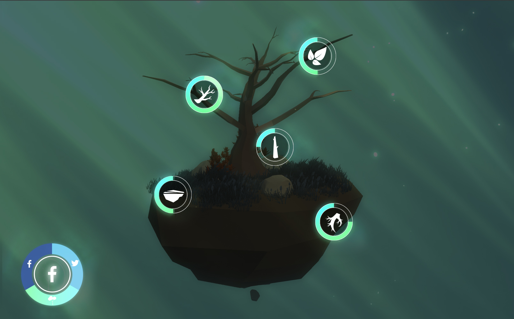
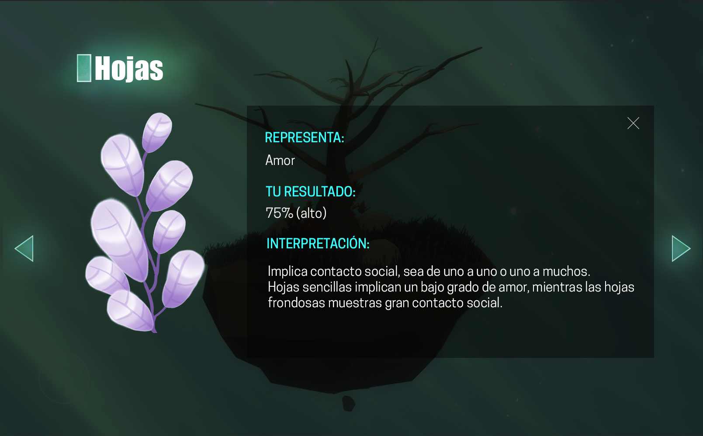

IdentiTree
The digitalization of the "self", a confrontation of the virtual identity

With the growing use of social networks and their adoption in daily live, a great amount of information, known as Big Data, has emerged and is being used by big companies to better understand the preferences of their clients and produce customized services. Part of the potential uses of this information are, nonetheless, being partially wasted since the Big Data does not reveal just the taste and preferences of the people but also is capable of construct the virtual identity of each user. In other words, it is possible to generate unique products that reflect this identity for each individual and in that way is capable of reach a whole new level of customization.congue.
What is IdentiTree?
IdentiTree is an interactive installation, which has two stations. In the first one, the user accepts terms and conditions necessary to allow the system to access the public information in their Facebook and Twitter accounts. Then an algorithm analyzes the user’s pictures to generate a color palette while the written content is processed with the personality Insights recognition and the tone analysis tools offered by Watson, an IBM platform.

First Station: LogIn Station
The first station can be presented with a small screen for the user to accept terms of use to allow the system and take data from Facebook and Twetter accounts from the user. Then the system process the information to get numerical results that will be sended to the next station.

Second Station: Product Interaction Station
The second station is presented in a big screen to improve the exhibition of the final result, a digital generated Tree that sums the virtual identity of the user.
This analysis generates numerical values that represent certain attributes of the user’s personality and these are sent to the second station, which builds a digital model in the form of a unique tree for each individual that is complemented with the color palette previously created. In addition to observe and explore the meaning of each visible attribute of the tree, the user can interact in real time by making new posts, that are reflected in the colors and lights of the scene, depending on the tone used in the new post itself. Finally the user can share their IdentiTree on Twitter direct form the installation.
 